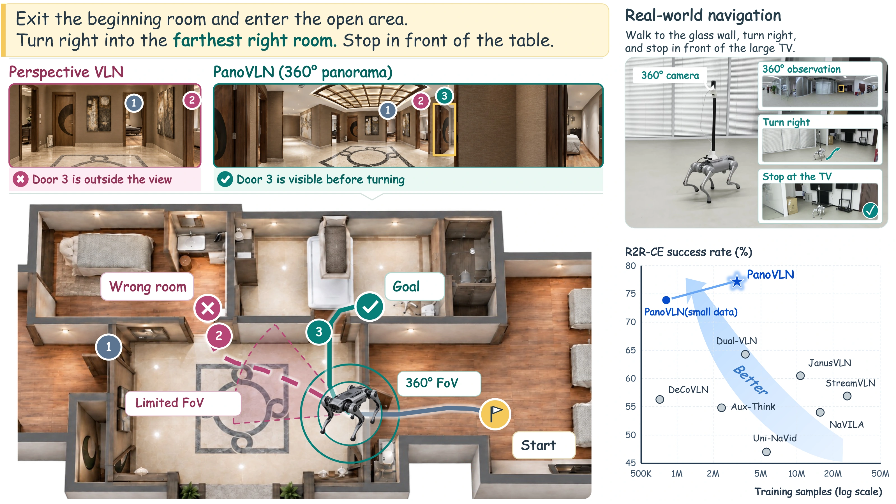
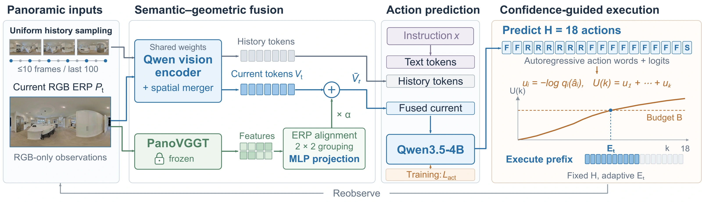
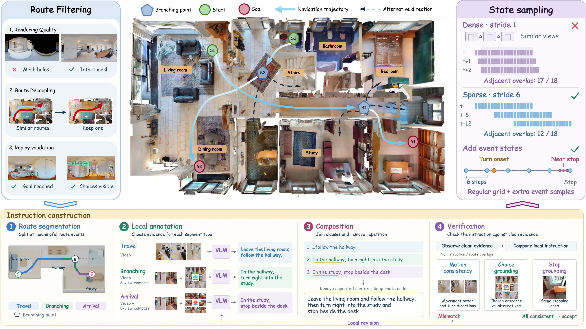
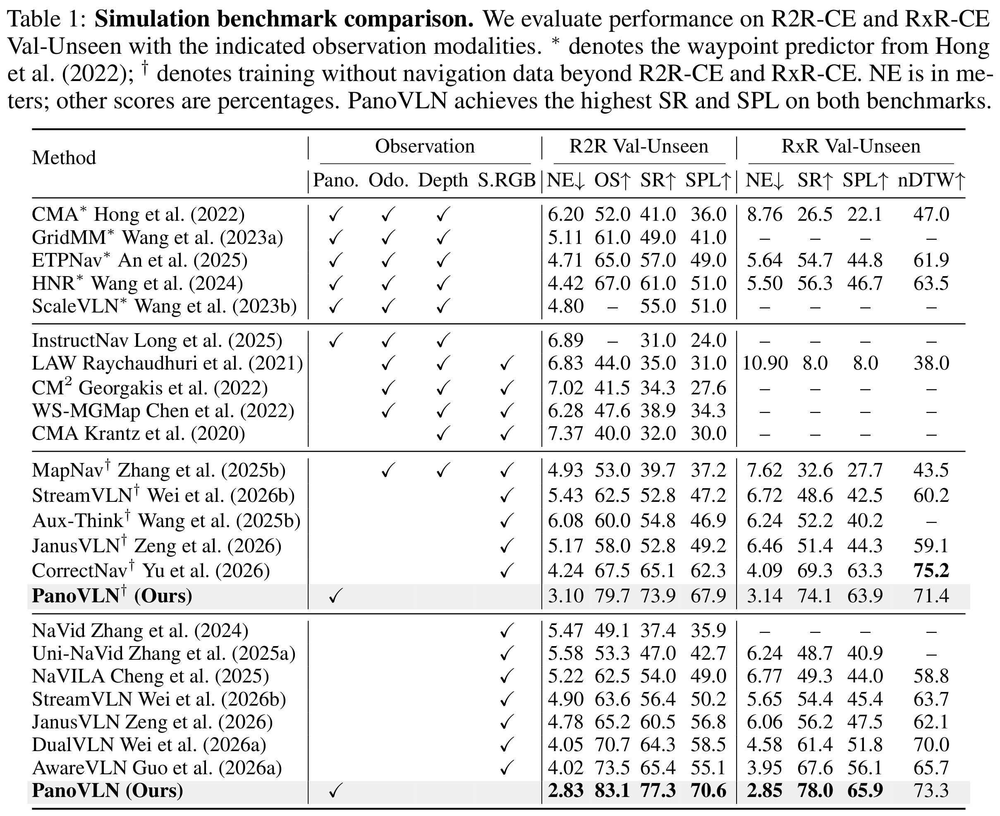
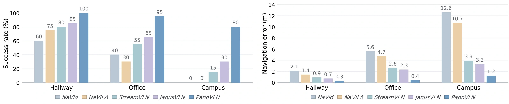
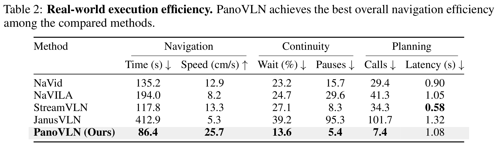

PanoVLN
Towards Effective Panoramic
Vision-and-Language Navigation
1 Zhejiang University2 The University of Hong Kong

Abstract
Recent vision-language models (VLMs) have advanced vision-and-language navigation (VLN), enabling models to predict navigation actions from visual observations and language instructions. In this work, we explore VLN with panoramic observations and introduce PanoVLN. The motivation is straightforward: more complete visual context should enable better-informed navigation decisions. For example, a panorama can reveal a passage outside a perspective camera's field of view, allowing the model to identify the intended route without additional exploration. However, we find that simply replacing perspective images with panoramas yields only limited gains. Our diagnosis suggests that fully exploiting wider visibility requires modifications to action prediction, training supervision, and visual representation. First, wider visibility supports longer-horizon action planning. We make the model predict longer action sequences, enabling larger turns and subsequent movement from a single panorama. Specifically, we introduce a confidence-guided execution (CGE) strategy that dynamically determines how many predicted actions to execute before replanning. Second, wider visibility also brings more complex route choices. We therefore construct training routes with frequent branching points and clear instructions to provide targeted supervision for route selection. Third, panoramic navigation requires understanding spatial relationships across viewing directions, beyond recognizing individual landmarks. We combine semantic and geometric features from RGB panoramas to capture both scene content and spatial layout without adding visual tokens. With a 4B backbone and RGB-only input, PanoVLN surpasses the previous SOTA by 11.9% and 8.7% in success rate on R2R-CE and RxR-CE Val-Unseen. Real-world experiments on a quadruped further demonstrate faster navigation with fewer pauses than prior VLN methods.
Demo Video
Model architecture

Dataset construction

Experiments


Execution efficiency

Real-World Visualization
Hallway · Red carpet
Campus · Recliner
Hallway · Elevator
Office · Sofa
Office · Water dispenser
Baseline methods
NaVid
NaVILA
StreamVLN
JanusVLN
VLN-CE Visualization
Living room to porch
Hallway to sliding door
Bedroom to staircase
Across the bedroom
Living room to laundry
Bedroom to shower
Models & Data
BibTeX Citation
@misc{wang2026panovln,
title = {PanoVLN: Towards Effective Panoramic Vision-and-Language Navigation},
author = {Zhen Wang and Changpeng Wang and Zhe Liu and Zhangyang Qi and
Yuxiang Lu and Zimo Zeng and Donglian Qi and Xi Chen},
year = {2026},
eprint = {2609.34759},
archivePrefix = {arXiv},
primaryClass = {cs.CV},
url = {https://arxiv.org/abs/2609.34759}
}